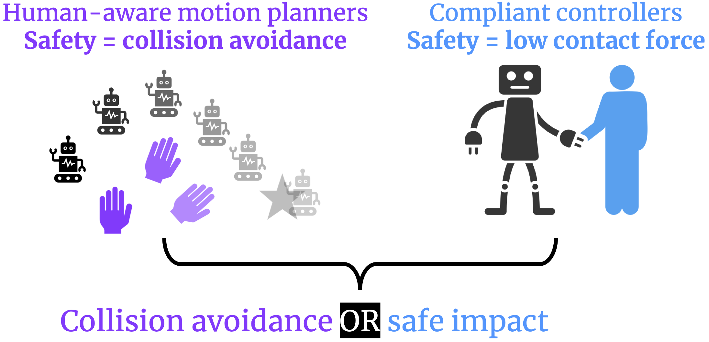
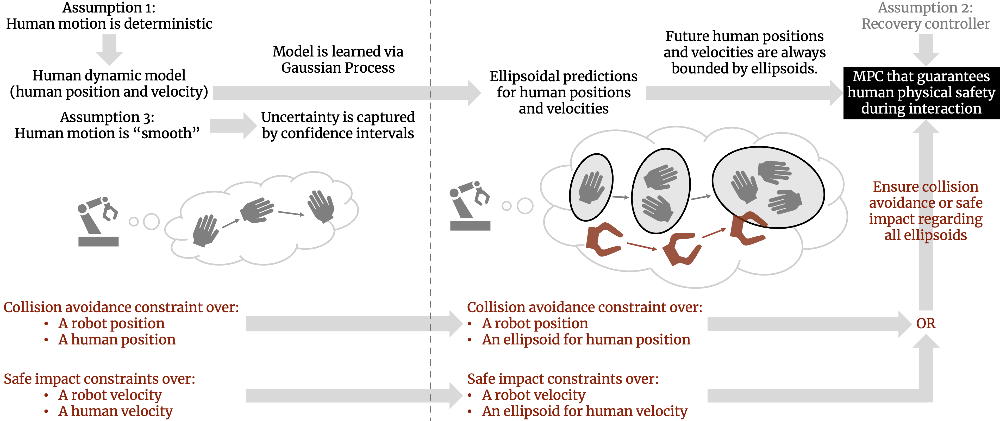

|
Robotics: Science and Systems 2021 (to appear) |
| Shen Li | Nadia Figueroa | Ankit Shah | Julie A. Shah |
Fig. 1: During robot-assisted dressing, the robot must remain physically close to the human arm to ensure human comfort due to the limited size of the armhole. Planners optimizing for human safety, defined as collision avoidance, might cause the robot to freeze in such a circumstance. In this work:
- We redefine safety as collision avoidance or safe impact in the event of a collision. This definition enables the robot to dress the person while allowing non-harmful impacts to occur.
- We developed an MPC algorithm that guarantees with a high probability that a human would be physically safe, according to our definition, during human-robot interaction.
We intend our method to be used for robots to personalize their assistance in activities of daily living to meet their users' specific needs [20]. A robot shipped to a user at home, for example, would only have a default model of how a human could interact with it during robot assistance. The misalignment between the default model and the true user behavior could lead to unsafe robot actions [40]. Our algorithm can enable the robot to reason about the uncertainty in its user model, safely assist the user, and efficiently collect on-policy data. With the interactive data, the robot could then adapt its user model and personalize its assistance for the user's needs.
Ensuring human safety without unnecessarily impacting task efficiency during human-robot interactive manipulation tasks is a critical challenge.
In this work, we formally define human physical safety as collision avoidance or safe impact in the event of a collision. We developed a motion planner that theoretically guarantees safety, with a high probability, under the uncertainty in human dynamic models. Our two-pronged definition of safety is able to unlock the planner's potential in finding efficient plans even when collision avoidance is nearly impossible.
The improved efficiency is empirically demonstrated in both a simulated goal-reaching domain and a real-world robot-assisted dressing domain.
We provide a unified view of two approaches to safe human-robot interaction: human-aware motion planners that use predictive human models and reactive controllers that compliantly handle collisions.
We incorporate insights from the fields of human-aware motion planning and compliant control, as shown in the figure below. Then we formally define human physical safety in human-aware motion planning for interactive manipulation tasks as collision avoidance or safe impact in the event of a collision. This two-pronged definition of safety could infuse flexibility into safe motion planners and enable them to find both safe and efficient plans.
We propose an MPC that guarantees human physical safety, according to our definition, with a high probability.

Fig. 2: The workflow on the top (in black) represents our human model and prediction. The workflow on the bottom (in red) represents our safety constraints, where safety is defined as collision avoidance or safe impact in the event of a collision. Both workflows merge at the black block representing our MPC algorithm that guarantees human physical safety, according to our definition, with a high probability.
On the left to the dotted line, the human model and safety constraints are formulated based on human positions and velocities. As shown on the right to the dotted line, our system constructs ellipsoids to outer-approximate the future human positions and velocities. On the right to the dotted line, the safety constraints are formulated based on these ellipsoids.
In the middle, the cartoon on the left to the dotted line illustrates the dynamic model of the human hand. The cartoon on the right to the dotted line illustrates the ellipsoidal prediction and the robot path (in red) that satisfies the safety constraints.
Our two-pronged definition of safety is able to unlock the planner's potential in finding efficient plans even when collision avoidance is nearly impossible. The improved efficiency is empirically demonstrated as follows:
In these videos, the progress bars are in green. The dart icon indicates that the robot has completed its task.
Case 1: the size of the armhole, denoted by \(d_{HR}^{max}\), is set to \(0.08\)m.
As shown in the video, the proposed safe MPC algorithm, where safety is defined as collision avoidance or safe impact in the event of a collision, achieved a much higher efficiency than the baseline safe MPC algorithm, where safety is defined as collision avoidance only.
Case 2: the size of the armhole, denoted by \(d_{HR}^{max}\), is relaxed to \(0.085\)m.
As shown in the video, the proposed safe MPC algorithm, where safety is defined as collision avoidance or safe impact in the event of a collision, still achieved a much higher efficiency than the baseline safe MPC algorithm, where safety is defined as collision avoidance only.
Case 3: the size of the armhole, denoted by \(d_{HR}^{max}\), is relaxed to \(0.09\)m.
As shown in the video, the proposed safe MPC algorithm, where safety is defined as collision avoidance or safe impact in the event of a collision, achieved a similar efficiency as the baseline safe MPC algorithm, where safety is defined as collision avoidance only.
@INPROCEEDINGS{Li-RSS-21,
AUTHOR = {Shen Li AND Nadia Figueroa AND Ankit Shah AND Julie A. Shah},
TITLE = {{Provably Safe and Efficient Motion Planning with Uncertain Human Dynamics}},
BOOKTITLE = {Proceedings of Robotics: Science and Systems},
YEAR = {2021},
ADDRESS = {Virtual},
MONTH = {July},
DOI = {10.15607/RSS.2021.XVII.050},
}

|
Webpage design courtesy of Jon Barron
|